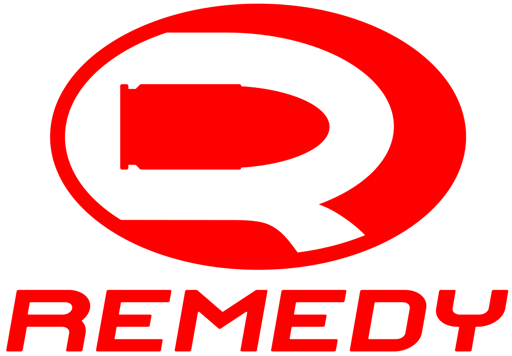

|  | Início | Sobre a Remedy | Contato |
Quem SomosA Remedy Entertainment Oyj é uma desenvolvedora finlandesa de jogos eletrônicos sediada em Espoo, Uusimaa. Foi fundada em agosto de 1995 por um grupo de jovens criadores de demos para computadores. A companhia é mais conhecida por ter desenvolvido os primeiros dois títulos da série Max Payne e os jogos Alan Wake e Quantum Break em parceria com a Microsoft Studios. Suas produções são marcadas por uma grande ênfase na narrativa e uma jogabilidade de ação para um jogador. Curiosidades Sobre a Remedy
|
|
| Todos os Direitos Reservados | |